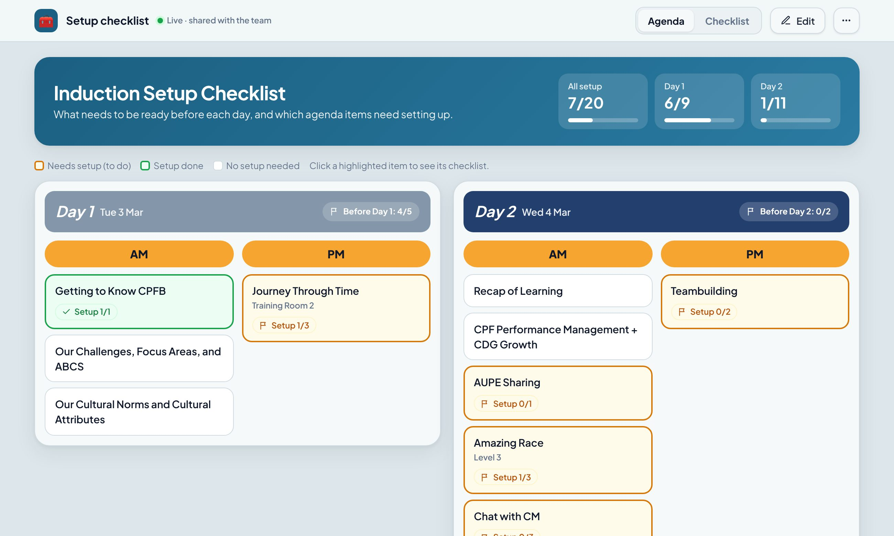
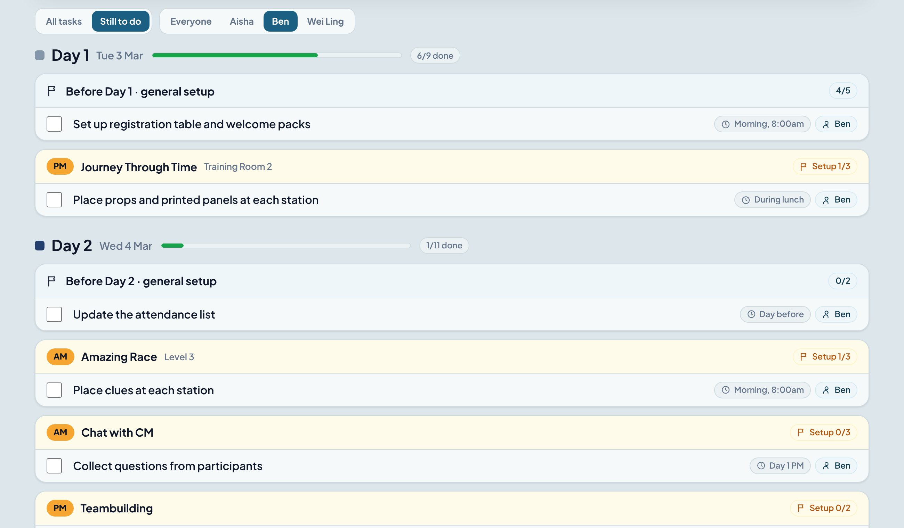

Using the Induction Setup Checklist
One shared page for the induction team: what to set up before each day, which agenda items need setting up, and who is doing what. Everyone sees ticks and changes live.
iOverview
The page has two tabs and an Edit mode. Anyone with the link can tick tasks and edit.
The programme laid out like the agenda slide. Items that need setup are highlighted, so you can see at a glance what's ready.
The setup tasks for each day, grouped into "Before Day N" and one list per highlighted agenda item. Tick them off as you go.
Change anything: days, dates, time blocks, agenda items, tasks, who does them and when. Changes save as you type.
⚡Quick start
- Open the checklist and click Edit at the top right.
- On the Agenda tab, type in the dates for Day 1 and Day 2, and check the agenda items match this intake's programme.
- Tick Needs setup on every agenda item that needs something prepared (props, stations, a speaker, a vendor…). Untick any that don't.
- Switch to the Checklist tab. For each list, add the tasks, who is doing each one, and when it needs to be done.
- Click Done editing and share the link with the team. Everyone ticks their own tasks as they finish them.
- After the intake, open the ⋯ menu and choose Untick everything, so the checklist is ready for the next one.
1Agenda tab
The days side by side, each split into time blocks (AM and PM), with the agenda items underneath.

- Progress at the top: tasks done out of the total, for all days and for each day.
- Highlighted items show a badge such as Setup 1/3. Click the item to jump straight to its checklist.
- Before Day N (the button in each day's coloured header) jumps to that day's general setup list.
- An item's time and venue show under its name if you've filled them in.
2Checklist tab
For each day: first the general "Before Day N" list, then one list for each agenda item marked Needs setup, in agenda order.

Ticking tasks
Click the box or the task's name. The tick saves straight away and shows on everyone's screen within a second or two. Click again to untick. You don't need Edit mode to tick.
Seeing just your tasks
Use the filters above the lists:
- Still to do hides ticked tasks.
- Click a name to show only that person's tasks. The names come from the Who field on each task, so they appear once someone has been assigned.

3Editing the agenda
Click Edit, then go to the Agenda tab. Every name and label turns into a box you can type in. Changes save when you click or tab out of a box, or press Enter.

| To… | Do this |
|---|---|
| Rename a day or add its date | Type in the two boxes in the day's header. |
| Change a day's colour | Click one of the coloured dots. |
| Reorder days | Use ‹ › in the day's header. |
| Add or remove a day | Add a day below the days; Delete day in the header. Deleting a day deletes its agenda items and tasks too. |
| Add a time block (e.g. "Lunch" or "9:00am") | + Time block in the day's header, then type its label in the orange bar. Reorder with ‹ ›, delete with 🗑. |
| Add an agenda item | + Add agenda item under a time block. Time and venue are optional. |
| Move an item up or down | The ⌃ ⌄ arrows on the item. |
| Flag an item as needing setup | Tick Needs setup. It gets an orange outline and its own list on the Checklist tab. |
4Editing tasks
In Edit mode, go to the Checklist tab. Each task becomes a row of boxes.

A short instruction, e.g. "Print clue cards and station sheets".
A name. Names you've used before are suggested, and each name becomes a filter button.
Free text: "1 week before", "Day before", "8:30am", "During lunch".
Optional: where things are kept, contacts, links, the number of copies…
Use + Add task at the bottom of a list to add a task, ⌃ ⌄ to reorder, and 🗑 to delete. Press Tab to move between boxes.
To add tasks for an agenda item that has no list yet, first tick Needs setup on it in the Agenda tab.
6On your phone
The page works on phones, so the team can tick tasks while walking the room.

Tip: bookmark the page or add it to your home screen. Filter to your own name to see just your list.
7A typical intake
- 2 weeks out Update the agenda and dates. Flag the items that need setup, add tasks and assign names.
- 1 week out Everyone filters to their name and starts on the "1 week before" tasks.
- Day before Check the Agenda tab: anything still orange needs attention. Use Still to do to see what's left.
- On the day Tick tasks off on your phone as stations and rooms are ready.
- After Fix anything you'd do differently next time, export a backup, then Untick everything.
?Troubleshooting
| What you see | What to do |
|---|---|
| The dot at the top is orange and says Demo mode | The page couldn't reach the shared database, so changes are only saved in your browser. Check your internet connection and reload. If it says rules not published, the Firestore rules need publishing again (see FIREBASE_SETUP.md). |
| Someone else's change isn't showing | Changes appear within a couple of seconds. If you're typing in a box, the page waits until you leave it before updating. Reload if it still doesn't show. |
| Two people edited the same thing | The last change saved wins. Ticks and edits to different tasks don't overwrite each other. |
| Something was deleted by mistake | There's no undo. Import your last export from the ⋯ menu, or re-add it by hand. |
| A name filter is missing | Filters only appear for names typed into a task's Who box. Check the spelling: "Ben" and "ben " count as different people. |